library(readr)
library(ggplot2)
library(dplyr)
library(patchwork)
# Load data
data_source <- "https://raw.githubusercontent.com/simoneSantoni/data-viz-smm635/refs/heads/master/data/googleplaystore.csv"
apps <- read_csv(data_source)
# Clean data
apps <- apps %>%
mutate(
Reviews = as.numeric(Reviews),
Rating = as.numeric(Rating)
) %>%
filter(Type %in% c("Free", "Paid"))Faceting and Multi-Panel Layouts with ggplot2
Setup
Faceting in ggplot2
Faceting creates multiple panels based on categorical variables, allowing comparison across subgroups. ggplot2 provides two main faceting functions:
facet_wrap()
facet_wrap() wraps a 1D sequence of panels into 2D, useful for faceting by a single variable.
apps %>%
ggplot(aes(x = Rating)) +
geom_histogram(bins = 30, fill = "steelblue", alpha = 0.7) +
facet_wrap(~Type) +
theme_minimal() +
labs(title = "Rating Distribution by App Type",
x = "Rating", y = "Count")
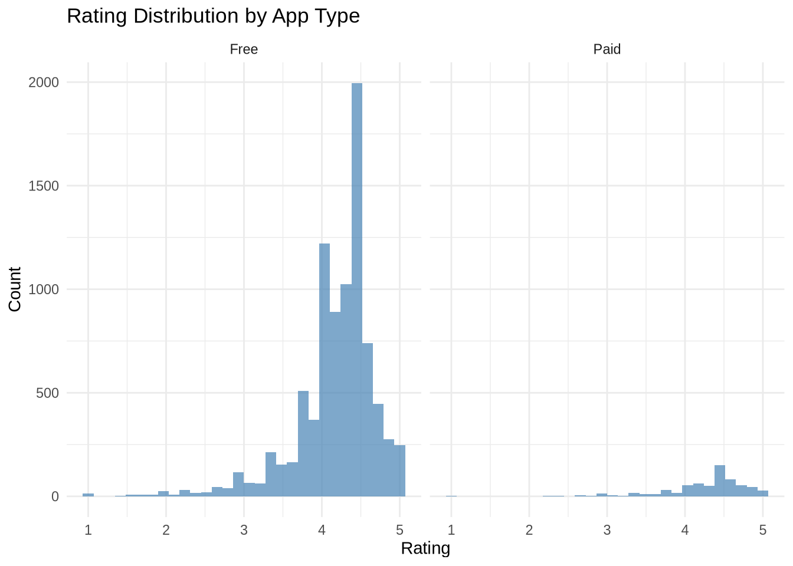
apps %>%
filter(`Content Rating` %in% c("Everyone", "Teen", "Mature 17+", "Everyone 10+")) %>%
ggplot(aes(x = Rating)) +
geom_density(fill = "coral", alpha = 0.6) +
facet_wrap(~`Content Rating`, ncol = 2) +
theme_minimal() +
labs(title = "Rating Density by Content Rating",
x = "Rating", y = "Density")
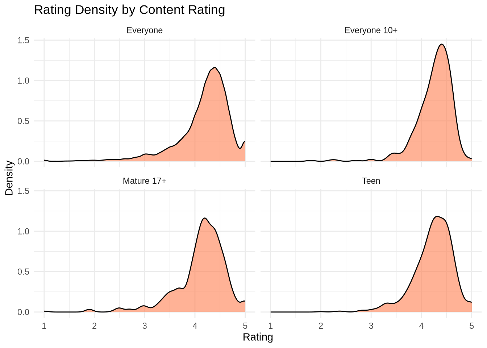
apps %>%
filter(`Content Rating` %in% c("Everyone", "Teen", "Mature 17+")) %>%
ggplot(aes(x = Reviews)) +
geom_histogram(bins = 20, fill = "darkgreen", alpha = 0.7) +
facet_wrap(~`Content Rating`, scales = "free") +
scale_x_log10() +
theme_minimal() +
labs(title = "Review Distribution with Independent Scales",
x = "Reviews (log scale)", y = "Count")
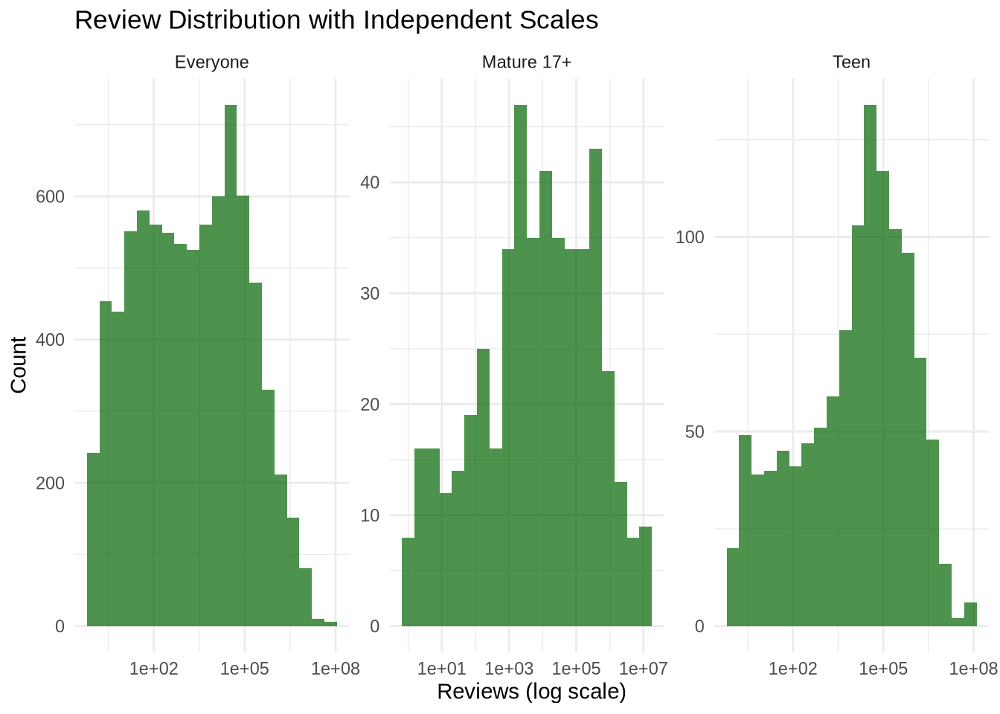
facet_grid()
facet_grid() forms a matrix of panels defined by row and column faceting variables. Perfect for examining interactions between two categorical variables.
apps %>%
filter(`Content Rating` %in% c("Everyone", "Teen")) %>%
ggplot(aes(x = Reviews, y = Rating)) +
geom_point(alpha = 0.3, color = "purple") +
geom_smooth(method = "lm", color = "red", se = FALSE) +
facet_grid(Type ~ `Content Rating`) +
scale_x_log10() +
theme_minimal() +
labs(title = "Reviews vs Rating: Type � Content Rating",
x = "Reviews (log scale)", y = "Rating")
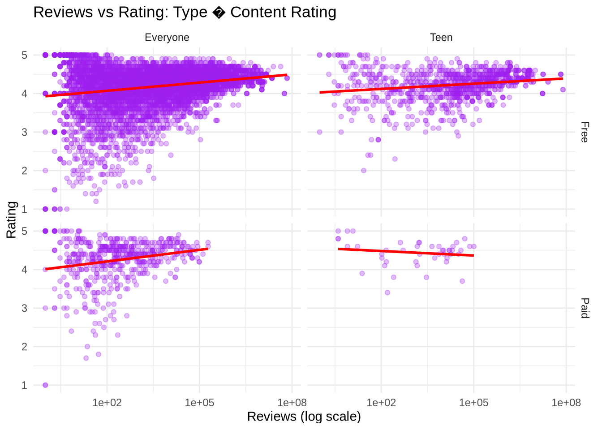
apps %>%
ggplot(aes(x = Rating, fill = Type)) +
geom_density(alpha = 0.5) +
facet_grid(Type ~ .) +
theme_minimal() +
scale_fill_brewer(palette = "Set1") +
labs(title = "Rating Density by App Type (Row Facets)",
x = "Rating", y = "Density")
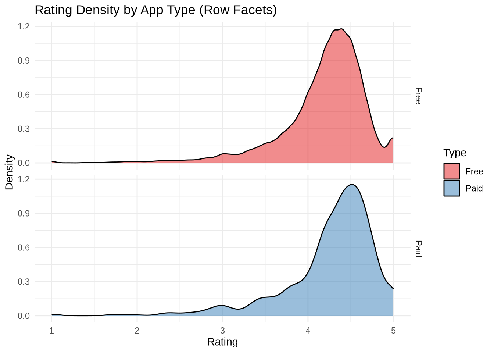
apps %>%
ggplot(aes(x = Rating, fill = Type)) +
geom_histogram(bins = 30, alpha = 0.7, position = "identity") +
facet_grid(. ~ Type) +
theme_minimal() +
scale_fill_brewer(palette = "Set2") +
labs(title = "Rating Distribution by App Type (Column Facets)",
x = "Rating", y = "Count")
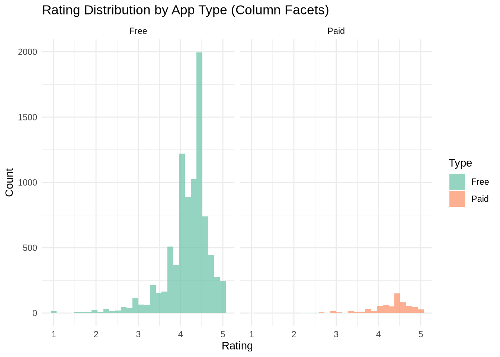
Patchwork: Flexible Multi-Panel Layouts
The patchwork package extends ggplot2’s capabilities by allowing you to combine independent plots with intuitive operators.
Basic Patchwork Operators
p1 <- apps %>%
ggplot(aes(x = Type, fill = Type)) +
geom_bar() +
theme_minimal() +
scale_fill_brewer(palette = "Pastel1") +
labs(title = "App Count by Type", x = "", y = "Count")
p2 <- apps %>%
ggplot(aes(x = Type, y = Rating, fill = Type)) +
geom_boxplot() +
theme_minimal() +
scale_fill_brewer(palette = "Pastel1") +
labs(title = "Rating Distribution", x = "", y = "Rating")
p1 + p2
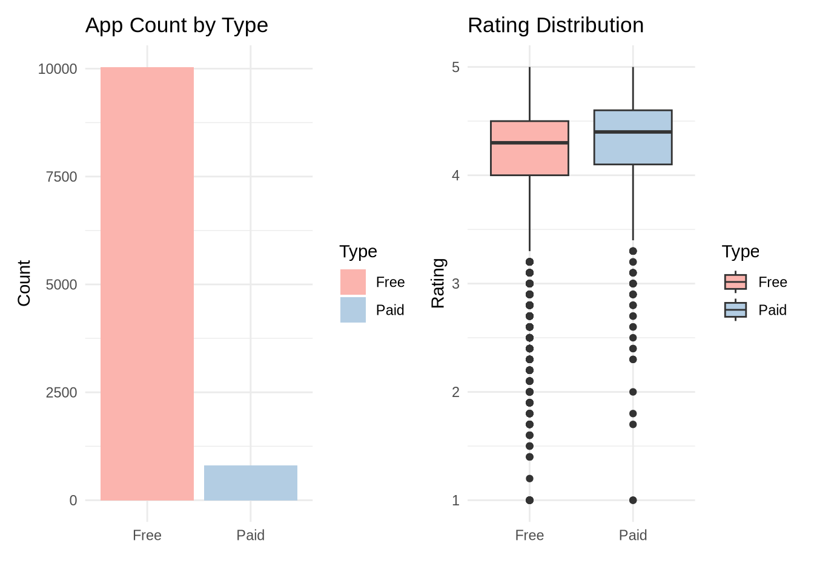
p3 <- apps %>%
filter(Reviews > 0) %>%
ggplot(aes(x = Reviews)) +
geom_histogram(bins = 50, fill = "skyblue") +
scale_x_log10() +
theme_minimal() +
labs(title = "Review Count Distribution", x = "Reviews (log scale)", y = "Count")
p4 <- apps %>%
ggplot(aes(x = Rating)) +
geom_histogram(bins = 30, fill = "salmon") +
theme_minimal() +
labs(title = "Rating Distribution", x = "Rating", y = "Count")
p3 / p4
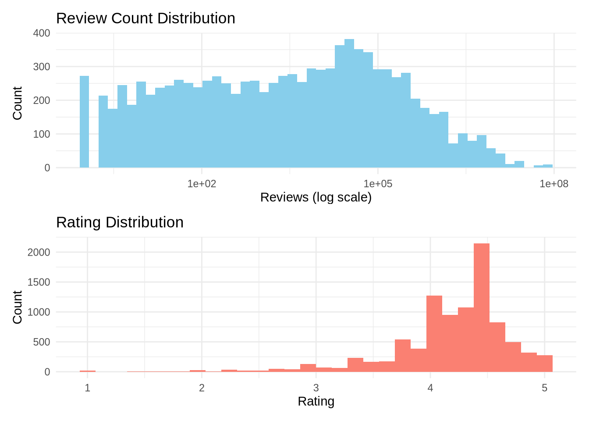
p5 <- apps %>%
ggplot(aes(x = `Content Rating`, fill = Type)) +
geom_bar(position = "dodge") +
theme_minimal() +
theme(axis.text.x = element_text(angle = 45, hjust = 1)) +
scale_fill_brewer(palette = "Set3") +
labs(title = "Apps by Content Rating & Type", x = "", y = "Count")
(p1 + p2) / p5
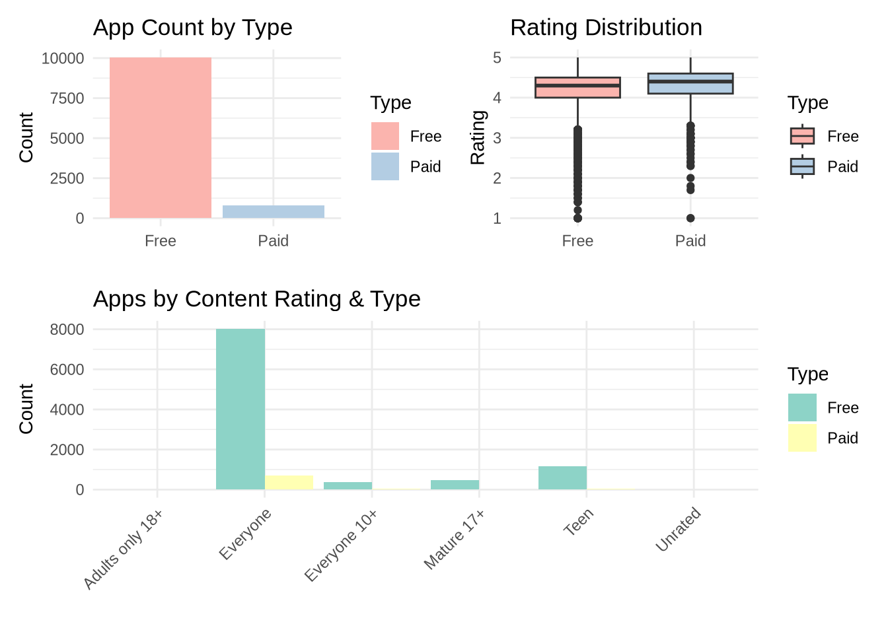
Advanced Patchwork Features
combined <- p1 + p2 + p3 + p4
combined +
plot_annotation(
title = 'Google Play Store Apps Analysis',
subtitle = 'Distribution of key metrics across app types',
tag_levels = 'A',
theme = theme(plot.title = element_text(size = 16, face = "bold"))
)
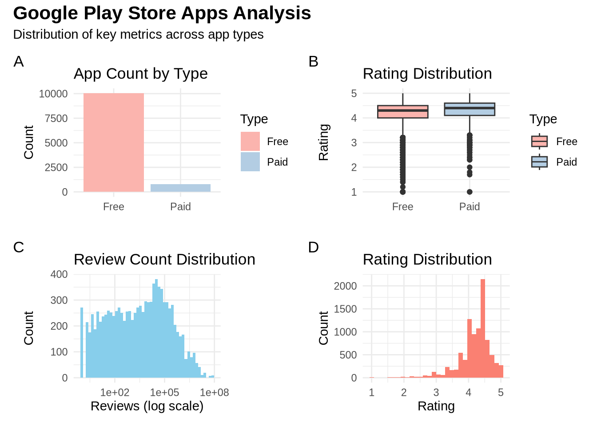
p1 + p2 + p3 + p4 +
plot_layout(ncol = 2, heights = c(1, 2))
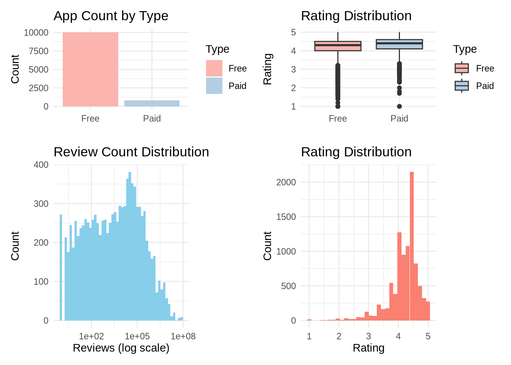
p6 <- apps %>%
filter(Reviews > 0, !is.na(Rating)) %>%
ggplot(aes(x = Reviews, y = Rating, color = Type)) +
geom_point(alpha = 0.4) +
geom_smooth(method = "lm", se = FALSE) +
scale_x_log10() +
scale_color_brewer(palette = "Set1") +
theme_minimal() +
labs(title = "Reviews vs Rating", x = "Reviews (log)", y = "Rating")
p7 <- apps %>%
count(Type, `Content Rating`) %>%
filter(`Content Rating` %in% c("Everyone", "Teen", "Mature 17+")) %>%
ggplot(aes(x = `Content Rating`, y = n, fill = Type)) +
geom_col(position = "dodge") +
theme_minimal() +
scale_fill_brewer(palette = "Set1") +
labs(title = "Distribution by Content Rating", x = "", y = "Count")
(p6 | (p1 / p2)) + plot_layout(widths = c(2, 1))
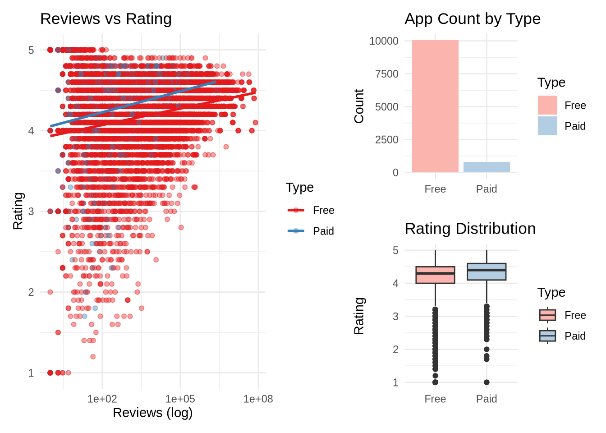
Collecting Guides
When plots share legends, patchwork can collect them into a single legend:
p8 <- apps %>%
filter(Reviews > 0) %>%
ggplot(aes(x = Reviews, fill = Type)) +
geom_histogram(bins = 30, alpha = 0.7) +
scale_x_log10() +
scale_fill_brewer(palette = "Dark2") +
theme_minimal() +
labs(title = "Review Distribution", x = "Reviews (log)", y = "Count")
p9 <- apps %>%
filter(!is.na(Rating)) %>%
ggplot(aes(x = Rating, fill = Type)) +
geom_density(alpha = 0.6) +
scale_fill_brewer(palette = "Dark2") +
theme_minimal() +
labs(title = "Rating Density", x = "Rating", y = "Density")
p8 + p9 + plot_layout(guides = "collect")
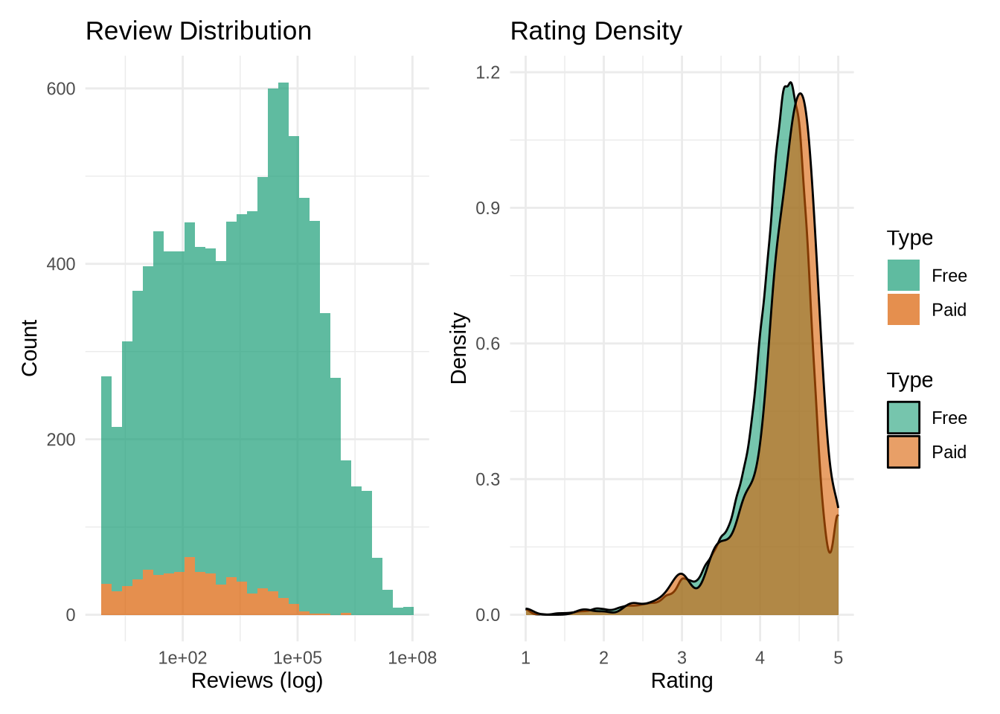
Faceting vs Patchwork: When to Use Which?
| Feature | facet_wrap / facet_grid | patchwork |
|---|---|---|
| Use case | Same plot type, same variables, different subgroups | Different plot types, different variables, or different data |
| Data source | Single data frame | Multiple data frames or sources |
| Aesthetics | Shared across all panels | Independent per plot |
| Scales | Can be fixed or freed | Fully independent |
| Layout | Regular grid | Flexible, asymmetric layouts |
| Legends | Automatically unified | Can be collected or kept separate |
| Annotations | Standard ggplot2 labels | Advanced with plot_annotation() |
Example: Complete Analysis Dashboard
# Overview panel
overview <- apps %>%
count(Type, `Content Rating`) %>%
filter(`Content Rating` %in% c("Everyone", "Teen", "Mature 17+", "Everyone 10+")) %>%
ggplot(aes(x = `Content Rating`, y = n, fill = Type)) +
geom_col(position = "dodge") +
theme_minimal() +
scale_fill_brewer(palette = "Set1") +
theme(axis.text.x = element_text(angle = 45, hjust = 1)) +
labs(title = "App Distribution", x = "", y = "Count")
# Rating analysis with facets
rating_facet <- apps %>%
filter(`Content Rating` %in% c("Everyone", "Teen")) %>%
ggplot(aes(x = Rating, fill = Type)) +
geom_density(alpha = 0.6) +
facet_wrap(~`Content Rating`) +
scale_fill_brewer(palette = "Set1") +
theme_minimal() +
labs(title = "Rating Density by Content Rating", x = "Rating", y = "Density")
# Reviews analysis
reviews_scatter <- apps %>%
filter(Reviews > 0, !is.na(Rating)) %>%
ggplot(aes(x = Reviews, y = Rating, color = Type)) +
geom_point(alpha = 0.3, size = 0.8) +
geom_smooth(method = "lm", se = FALSE, size = 1) +
scale_x_log10() +
scale_color_brewer(palette = "Set1") +
theme_minimal() +
labs(title = "Reviews vs Rating", x = "Reviews (log scale)", y = "Rating")
# Combine with patchwork
(overview | rating_facet) / reviews_scatter +
plot_layout(heights = c(1, 1.5), guides = "collect") +
plot_annotation(
title = 'Google Play Store Apps: Comprehensive Analysis',
subtitle = 'Combining faceting and patchwork for effective data storytelling',
tag_levels = 'A',
theme = theme(
plot.title = element_text(size = 18, face = "bold"),
plot.subtitle = element_text(size = 12)
)
) &
theme(legend.position = "bottom")
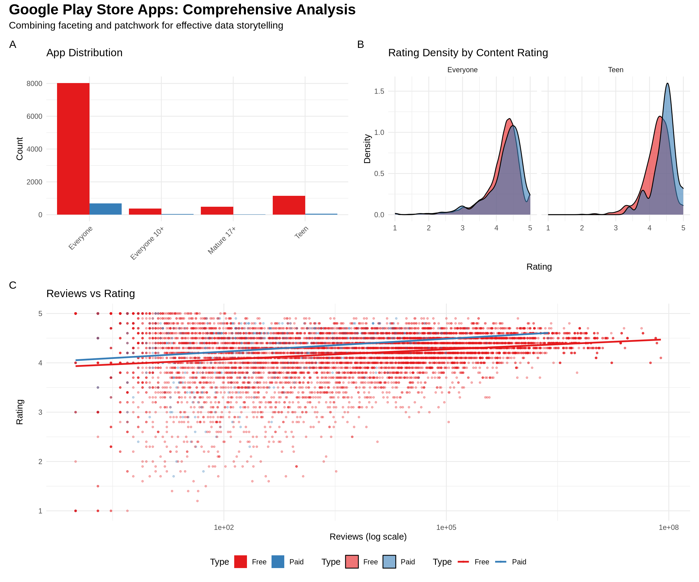
Summary
This document demonstrated:
- facet_wrap(): For wrapping panels in a ribbon
- facet_grid(): For creating rectangular grids
- Patchwork operators:
+(side-by-side),/(stacked),|(compose) - plot_layout(): Fine control over dimensions and arrangement
- plot_annotation(): Adding titles, tags, and themes
- Collecting guides: Unifying legends across plots